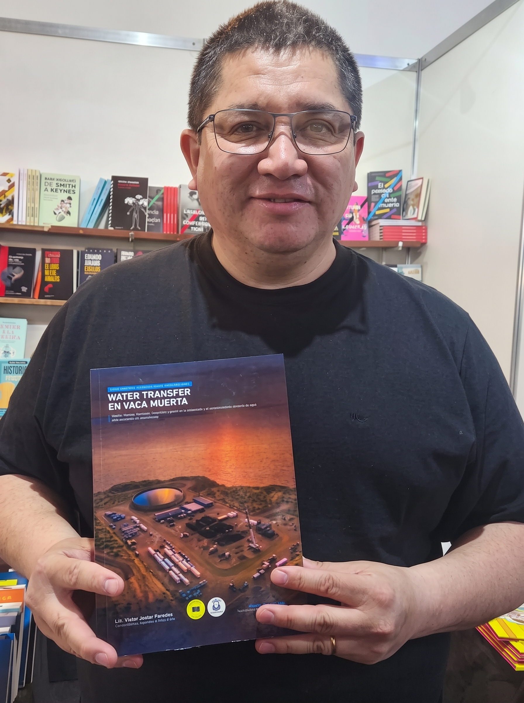
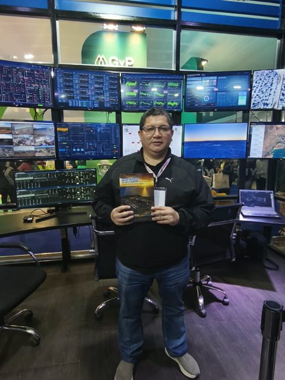
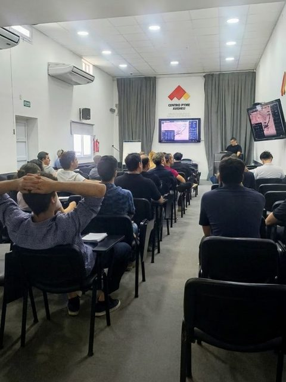
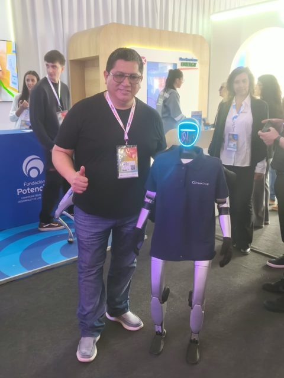
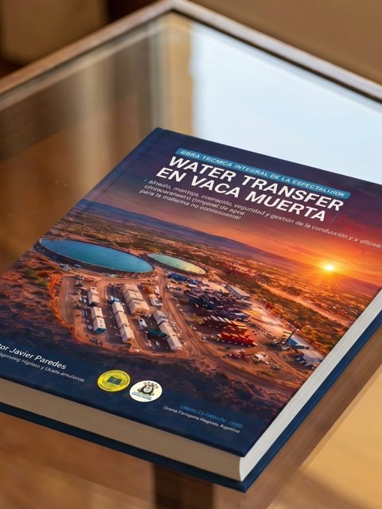
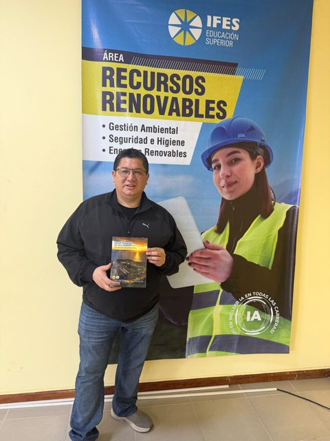
VPLicenciado en Higiene y Seguridad Laboral · Técnico en Hidrocarburos · HSE en operaciones de Vaca Muerta
Autor del manual Water Transfer en Vaca Muerta, una guía práctica sobre acueductos temporales de manguera layflat: cálculo hidráulico, pérdida de carga calibrada con presiones de campo, ubicación de rebombeos, golpe de ariete y operación segura. Estas herramientas llevan los criterios del libro a la pantalla, para diseñar una traza, entender cómo trabaja la línea y entrenar a quienes la operan.
Water Transfer en Vaca Muerta · 278 páginas · 20 capítulos · 12 anexos · precio y envío por WhatsApp
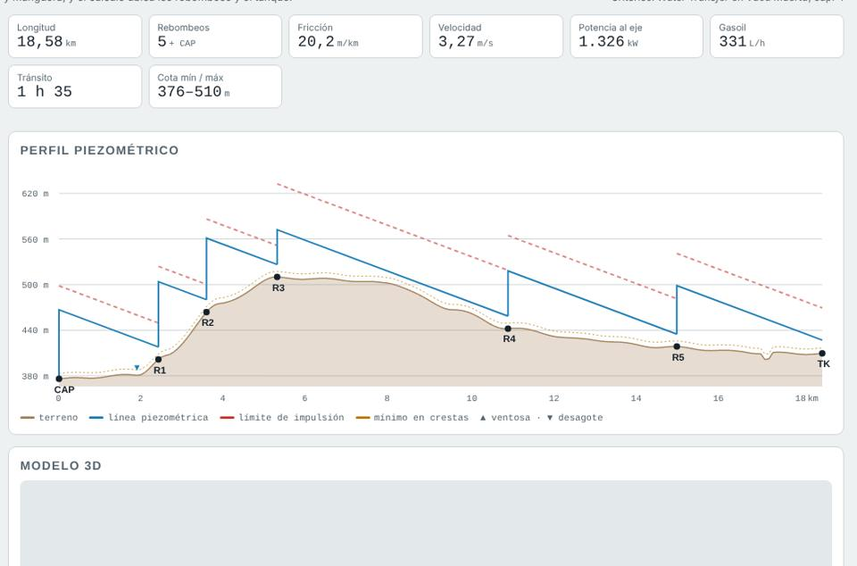
Cargás el KMZ de la traza, definís caudal y manguera, y calcula dónde van los rebombeos y el tanque.
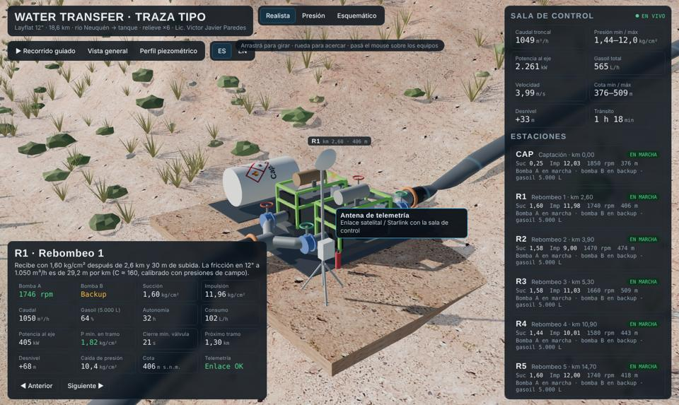
Recorrido en 3D de una troncal de 18,6 km, desde el río hasta el tanque, sobre relieve de barda y meseta.
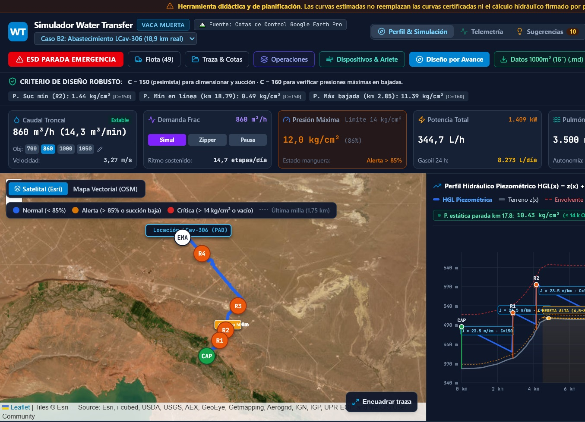
Simulador de operación: regulás las rpm de cada estación y ves cómo responden presiones y caudal en toda la línea.
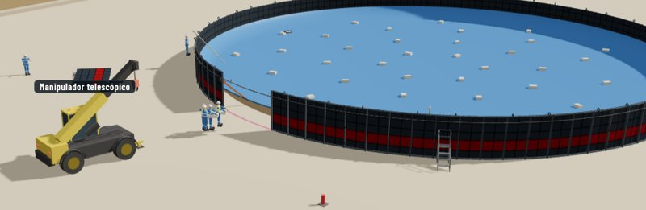
Animación 3D paso a paso del montaje de un tanque de 22 placas en dos jornadas, con reloj de obra y criterios de seguridad.
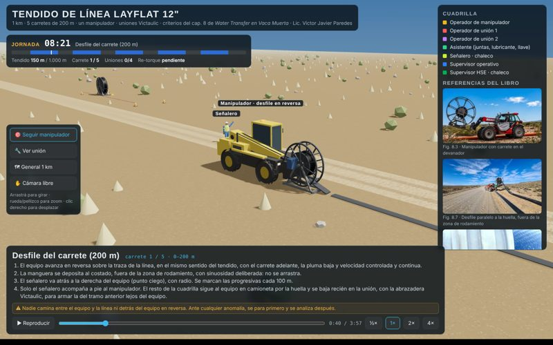
Animación 3D del tendido de 1 km de manguera de 12" con un manipulador: desfile de carretes en reversa y unión de punteras Victaulic, con reloj de obra.
📖 Basado en el capítulo 8 · Montaje de línea layflat: 8.4 Descarga de carretes y acopio · 8.5 Desfile de carretes · 8.6 Trazado en terreno · 8.7 Uniones · 8.8 Unión de punteras por diámetro
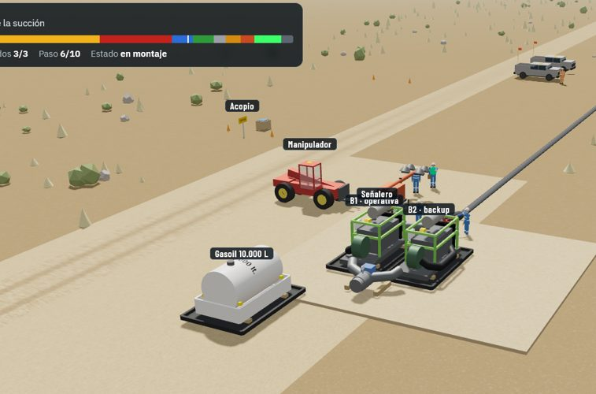
Animación 3D del montaje de una estación con motobomba operativa y backup, posicionadas con camilla o hidrogrúa, con reloj de obra.
📖 Basado en el capítulo 6 · Conducción, rebombeos y pulmones (6.2 Estación de rebombeo), 10 · Motobombas y 12.1 Cisternas de gasoil
Calibrado con presiones reales de campo y escrito para quien diseña, monta y opera. Cada criterio de las herramientas de esta página sale de sus capítulos.
Martes 3 de noviembre.
Viernes 6 de noviembre, modalidad presencial.
Miércoles 11 de noviembre, modalidad virtual.
Miércoles 28, de 14 a 16 h · Organiza Centro PyME · inscripción a través de Centro PyME
Para estudiantes de 3.er año de Hidrocarburos, Topografía, Geología y Seguridad e Higiene.
Presentación del libro en Neuquén: traza, cálculo hidráulico, rebombeos, tendido de layflat y seguridad en campo.
Cursos y charlas para cuadrillas, supervisores y áreas de HSE de operadoras, empresas de servicio y pymes, con los criterios del libro y las herramientas de esta página.
Humand es la app argentina de recursos humanos y comunicación interna pensada para el personal de campo y operativo: novedades, legajos, recibos de sueldo, vacaciones y licencias, encuestas, capacitación y reconocimientos, todo desde el celular. Permite capacitar al personal con lecciones cortas, cuestionarios y certificados automáticos, y deja registro de quién completó cada curso, con reportes exportables para auditorías y capacitaciones obligatorias. La usan más de 1.000 empresas y más de un millón de personas en más de 40 países.
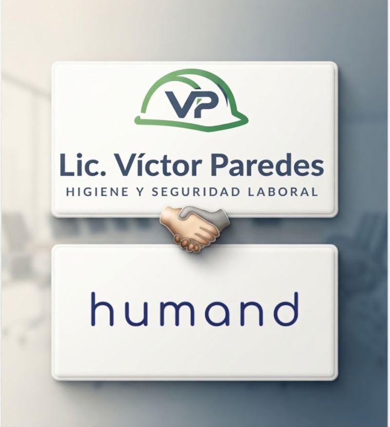
Algunas empresas argentinas que la usanEmpresas citadas en los casos de éxito de Humand y en la prensa (Mercado, 2025; Descubre, 2026).